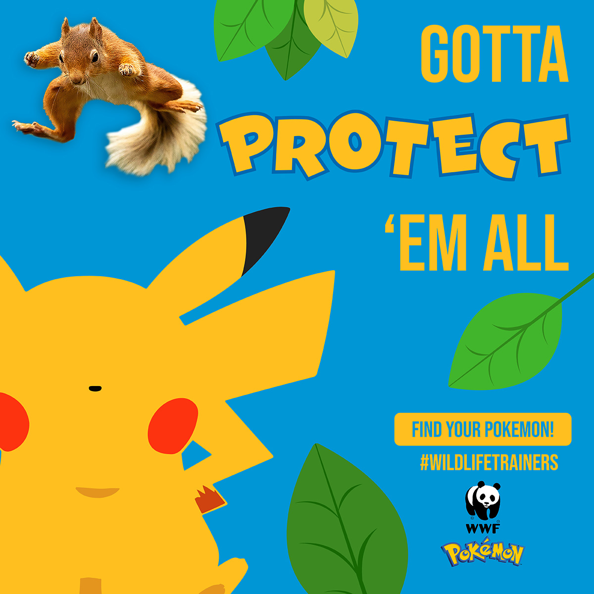

Dragon Vector Art

Dragon Vector Art is a personal work I developed on my own.
The purpose behind was to celebrate the new year, while doing some research I
discovered 2024 would be the year of the dragon in the chinese lunar calendar. So
as to represent both special occasions, I came up with the idea of integrating a
dragon into my work and combine its body with the number 24.
YOASOBI Vinyl Cover Design

Vinyl Cover Design is a cover design developed based on the song, Racing into the night by Yoasobi.
Gathering teenagers and young adults who enjoy foreign music with greater meaning and significance. As well as to
challenge visual appeals and consider character actions critically. By using illustration as a vital component to
showcase both sides of the song through color, illustration, and typography.
WWF Vector Campaign

WWF campaign was built around WWF's values and branding elements to raise awareness about endangered species, with
the target audience being kids, I worked to develop ideas and collaborations that would attarct both kids and parents attentions.
Therefore, I chose to team up with pokémon in order to raise awareness and bring that curiousity and joy kids get from watching and
learning about their favorite pokémon!
Loomin Disruptor Brand

Loomin is a disruptor brand that I created to work as both a portfolio
site and a networking site too for creatives of all kind. The name loomin derives from luminous; full of light. Providing opportunities
to showcase your expertise through visuals and networking with easy to manage UI and customizations for your authentic self.